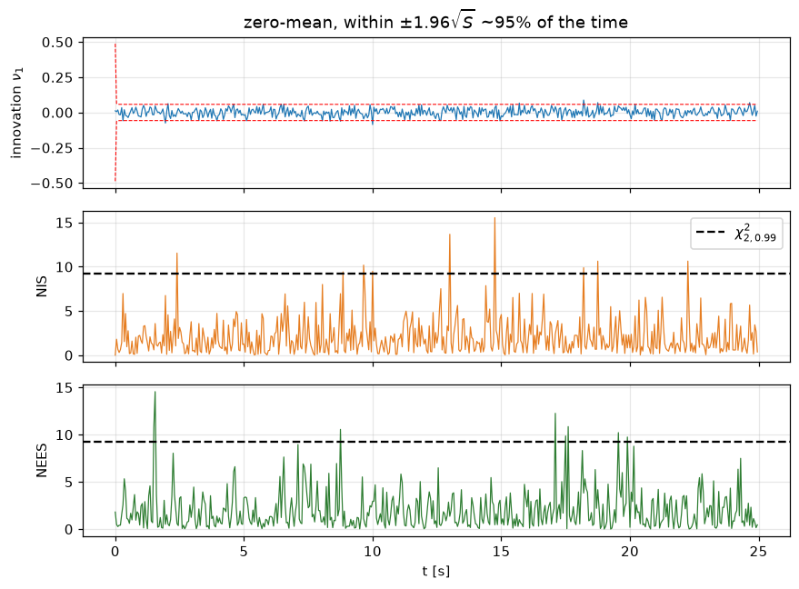
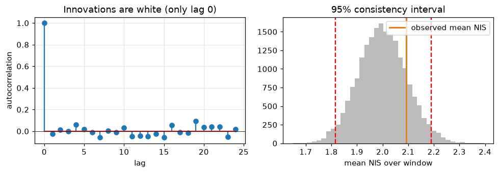
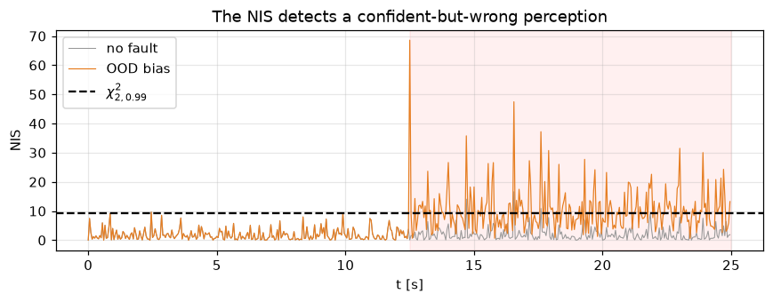

Goal. Build the independent, model-based check that catches a perception failure
even when the network is confident. We derive the Kalman filter as recursive
Bayesian estimation, establish the whiteness of its innovations, prove that the
normalised innovation squared (NIS) is chi-squared distributed, and use that to test
consistency and detect faults. This is the mathematical core of the whole project.
For a linear-Gaussian model every distribution here stays Gaussian, so the whole
recursion collapses to propagating a mean and covariance - and that is exactly
the Kalman filter [1].
2. The Kalman filter
Writing the Gaussians as (\hat x, P), the recursion becomes:
Time update (predict) \hat x_{k\mid k-1}=A\hat x_{k-1}+Bu_{k-1},\qquad P_{k\mid k-1}=A P_{k-1}A^\top+Q.
The gain K_k can be derived two ways that give the same answer [2,3]: as the
Bayesian posterior mean of a Gaussian, or - without any Gaussian assumption - as
the best linear unbiased estimator (minimum-variance) that minimises
\mathbb E\|x_k-\hat x_k\|^2. Either way, K_k=P_{k\mid k-1}C^\top S_k^{-1}.
3. The innovation and why it is white
The innovation\nu_k = y_k - C\hat x_{k\mid k-1} is the part of the new
measurement that the model did not predict. For the correct model with the optimal
gain it has three properties [5,6]:
\mathbb E[\nu_k]=0,\qquad \mathrm{Cov}[\nu_k]=S_k,\qquad
\mathbb E[\nu_k\,\nu_j^\top]=0\ \text{ for } k\neq j.
The last one - whiteness - is the powerful part: an optimal filter extracts all
the predictable information, so what remains is temporally uncorrelated noise. The
filter effectively transforms the correlated measurements into a white innovations
sequence (the "innovations representation" [5]). If the innovations are not white,
or not zero-mean, or do not match S_k, the model is wrong. That is the hook for
both consistency testing and fault detection.
4. The NIS statistic and the consistency test
Since \nu_k\sim\mathcal N(0,S_k), whiten it: e_k=S_k^{-1/2}\nu_k\sim\mathcal N(0,I_m).
Then the normalised innovation squared
Single-sample gate.\mathrm{NIS}_k>\chi^2_{m,1-\alpha} flags an inconsistent
sample; for m=2, \chi^2_{2,0.99}=9.21.
Time-averaged test. A single sample is noisy. Averaging over a window of N
(approximately independent) steps, \sum_k\mathrm{NIS}_k\sim\chi^2_{Nm}, so the mean
\overline{\mathrm{NIS}} should fall inside a tight two-sided interval around m -
the filter consistency test of Bar-Shalom [6]. Too high means the filter is
overconfident (real errors exceed the claimed S); too low means it is
conservative.
NEES (a simulation-only cousin). When the true state is known (as in a
simulator) the normalised estimation error squared
\mathrm{NEES}_k=(x_k-\hat x_k)^\top P_k^{-1}(x_k-\hat x_k)\sim\chi^2_n tests whether
the reported covariance P_k is honest [6]. We use it below to validate our filter.
import numpy as np, matplotlib.pyplot as plt
rng = np.random.default_rng(0)
L, Ts, V = 2.7, 0.05, 15.0
A = np.array([[1, V*Ts], [0, 1.0]]); B = np.array([0.0, V*Ts/L]); C = np.eye(2)
Qt = np.diag([2e-4, 1e-4]) # true process-noise covariance
Rt = np.diag([0.02**2, 0.01**2]) # true measurement-noise covariance
def run_filter(N=500, bias_after=None, bias=(0.0, 0.0), R_scale=1.0, seed=0):
r = np.random.default_rng(seed)
x = np.zeros(2); xhat = np.zeros(2); P = np.diag([0.05, 0.02])
Rc = Rt*R_scale # covariance the filter *claims* (may be wrong)
out = {k: [] for k in ("nu0", "s0", "nis", "nees", "biased")}
for k in range(N):
u = 0.05*np.sin(2*np.pi*k*Ts/3.0) # known steering input
x = A@x + B*u + r.multivariate_normal([0, 0], Qt) # true dynamics
b = np.array(bias) if (bias_after is not None and k >= bias_after) else np.zeros(2)
y = C@x + b + r.multivariate_normal([0, 0], Rt) # measurement (+ optional OOD bias)
# --- Kalman filter ---
xp = A@xhat + B*u; Pp = A@P@A.T + Qt
nu = y - C@xp; S = C@Pp@C.T + Rc
nis = float(nu @ np.linalg.solve(S, nu))
K = Pp@C.T@np.linalg.inv(S); xhat = xp + K@nu; P = (np.eye(2) - K@C)@Pp
nees = float((x - xhat) @ np.linalg.solve(P, x - xhat))
out["nu0"].append(nu[0]); out["s0"].append(S[0, 0])
out["nis"].append(nis); out["nees"].append(nees); out["biased"].append(b[0] != 0)
return {k: np.array(v) for k, v in out.items()}
H0 = run_filter(seed=1) # correct model, no fault
print("mean NIS = %.2f (expected m = 2)" % H0["nis"].mean())
print("mean NEES = %.2f (expected n = 2)" % H0["nees"].mean())
mean NIS = 2.08 (expected m = 2)
mean NEES = 2.01 (expected n = 2)
# Demo A: the filter is consistent under the correct model
t = np.arange(len(H0["nis"]))*Ts
fig, ax = plt.subplots(3, 1, figsize=(8, 6), sharex=True)
ax[0].plot(t, H0["nu0"], color="#1f77b4", lw=.8)
ax[0].plot(t, 1.96*np.sqrt(H0["s0"]), 'r--', lw=.7); ax[0].plot(t, -1.96*np.sqrt(H0["s0"]), 'r--', lw=.7)
ax[0].set_ylabel("innovation $\\nu_1$"); ax[0].set_title("zero-mean, within $\\pm1.96\\sqrt{S}$ ~95% of the time")
ax[1].plot(t, H0["nis"], color="#e67e22", lw=.8); ax[1].axhline(9.21, ls="--", color="k", label="$\\chi^2_{2,0.99}$")
ax[1].set_ylabel("NIS"); ax[1].legend(loc="upper right")
ax[2].plot(t, H0["nees"], color="#2e7d32", lw=.8); ax[2].axhline(9.21, ls="--", color="k")
ax[2].set_ylabel("NEES"); ax[2].set_xlabel("t [s]")
for a in ax: a.grid(alpha=.3)
plt.tight_layout(); plt.show()
print("fraction of NIS above the 99%% gate: %.2f (expected ~0.01)" % np.mean(H0["nis"] > 9.21))

fraction of NIS above the 99% gate: 0.02 (expected ~0.01)
# Whiteness of the innovations, and the time-averaged consistency test (Monte-Carlo bounds)
def autocorr(x, maxlag=25):
x = x - x.mean(); c = np.correlate(x, x, "full"); c = c[c.size//2:]
return c[:maxlag] / c[0]
warm = 50; m = 2 # skip filter warm-up
avg_nis = H0["nis"][warm:].mean(); avg_nees = H0["nees"][warm:].mean()
Nw = len(H0["nis"]) - warm
mc = np.mean(rng.chisquare(m, size=(20000, Nw)), axis=1) # sampling dist. of the mean
lo, hi = np.percentile(mc, [2.5, 97.5])
fig, ax = plt.subplots(1, 2, figsize=(9, 3.2))
ax[0].stem(range(25), autocorr(H0["nu0"]))
ax[0].axhline(0, color='k', lw=.5); ax[0].set(xlabel="lag", ylabel="autocorrelation",
title="Innovations are white (only lag 0)")
ax[0].grid(alpha=.3)
ax[1].hist(mc, bins=40, color="#bbb"); ax[1].axvline(lo, color='r', ls='--'); ax[1].axvline(hi, color='r', ls='--')
ax[1].axvline(avg_nis, color="#e67e22", lw=2, label="observed mean NIS")
ax[1].set(xlabel="mean NIS over window", title="95% consistency interval"); ax[1].legend()
plt.tight_layout(); plt.show()
print("time-averaged NIS = %.2f 95%% acceptance interval [%.2f, %.2f]" % (avg_nis, lo, hi))
print("time-averaged NEES = %.2f -> filter covariance P is honest" % avg_nees)

time-averaged NIS = 2.09 95% acceptance interval [1.82, 2.19]
time-averaged NEES = 1.99 -> filter covariance P is honest
5. From consistency to fault detection
Because NIS tests the innovation against the model, anything that breaks the model
raises it: a bias, an unmodelled manoeuvre, a wrong noise covariance, or an
out-of-distribution regime the perception was never trained on. The classical
theory of innovation-based fault detection [7,8] formalises this; a validation gate
on NIS also rejects outliers in measurement association [6].
The case that matters for us: the perception network becomes confidently wrong.
The measurement y_k acquires a systematic bias, but the network keeps reporting a
small R. The innovation \nu_k then grows while S_k stays small, so
\mathrm{NIS}=\nu^\top S^{-1}\nu explodes - the failure is detected even though the
perception's own uncertainty never rose. This is precisely the gap that notebook 04
warned about.
# Demo B: an out-of-distribution bias appears at t = 12.5 s; reported R stays small
fault = run_filter(N=500, bias_after=250, bias=(0.22, 0.06), seed=2)
t = np.arange(500)*Ts
plt.figure(figsize=(8, 3.2))
plt.plot(t, run_filter(N=500, seed=2)["nis"], color="#999", lw=.7, label="no fault")
plt.plot(t, fault["nis"], color="#e67e22", lw=.8, label="OOD bias")
plt.axhline(9.21, ls="--", color="k", label="$\\chi^2_{2,0.99}$")
plt.axvspan(250*Ts, 500*Ts, color="red", alpha=.06)
plt.ylabel("NIS"); plt.xlabel("t [s]"); plt.title("The NIS detects a confident-but-wrong perception")
plt.legend(loc="upper left"); plt.grid(alpha=.3); plt.tight_layout(); plt.show()
print("mean NIS before bias: %.1f after bias: %.1f" % (fault["nis"][:250].mean(), fault["nis"][250:].mean()))
print("detection rate after bias (NIS>9.21): %.0f%%" % (100*np.mean(fault["nis"][250:] > 9.21)))

mean NIS before bias: 1.9 after bias: 10.5
detection rate after bias (NIS>9.21): 47%
# Why an *honest* R matters: the test compares the innovation to the CLAIMED S
print("claimed-R scale mean NIS interpretation")
for scale in (0.25, 0.5, 1.0, 2.0, 4.0):
mn = run_filter(N=500, R_scale=scale, seed=3)["nis"][50:].mean()
tag = ("overconfident R -> false alarms" if scale < 1 else
"honest R -> mean ~ 2" if scale == 1 else
"conservative R -> misses faults")
print(" %5.2f %6.2f %s" % (scale, mn, tag))
claimed-R scale mean NIS interpretation
0.25 4.06 overconfident R -> false alarms
0.50 2.89 overconfident R -> false alarms
1.00 1.93 honest R -> mean ~ 2
2.00 1.24 conservative R -> misses faults
4.00 0.79 conservative R -> misses faults
6. Where this plugs in
The NIS is the second of the three signals fused into the integrity score of
notebook 06: s_{NIS}=\exp\!\big(-(\mathrm{NIS}-\chi^2)^+/c\big) is near 1 while
the filter is consistent and decays once NIS crosses the threshold. Unlike the
perception's self-reported uncertainty (notebook 04) and the pixel-level ODD
features (notebook 03), the NIS is an external check grounded in the vehicle
dynamics - which is why it catches the out-of-distribution curve the others miss.
Exercises
Confirm \mathbb E[\mathrm{NIS}]=m and \mathbb E[\mathrm{NEES}]=n empirically by
averaging over many independent runs, and check the variance matches 2m, 2n.
Make the true process noise larger than the filter's Q (an under-modelled
manoeuvre). Which statistic reacts - NIS, NEES, or both?
Replace the step bias with a slow ramp and compare single-sample gating against a
windowed average. Which detects the gradual drift sooner? (Foreshadows CUSUM in notebook 09.)
Add a whiteness test: compute the lag-1 innovation autocorrelation under H0 and
under the bias. Does a constant bias break whiteness, or only zero-mean?
References
R. E. Kalman. A New Approach to Linear Filtering and Prediction Problems. ASME Journal of Basic Engineering, 82(1):35-45, 1960. doi:10.1115/1.3662552
A. H. Jazwinski. Stochastic Processes and Filtering Theory. Academic Press, 1970.
B. D. O. Anderson, J. B. Moore. Optimal Filtering. Prentice Hall, 1979.
S. Sarkka. Bayesian Filtering and Smoothing. Cambridge University Press, 2013.
T. Kailath. An innovations approach to least-squares estimation - Part I: Linear filtering in additive white noise. IEEE Transactions on Automatic Control, 13(6):646-655, 1968. doi:10.1109/TAC.1968.1099025
Y. Bar-Shalom, X.-R. Li, T. Kirubarajan. Estimation with Applications to Tracking and Navigation. Wiley, 2001. (NIS / NEES consistency tests and validation gating.)
R. K. Mehra, J. Peschon. An innovations approach to fault detection and diagnosis in dynamic systems. Automatica, 7(5):637-640, 1971. doi:10.1016/0005-1098(71)90028-8
A. S. Willsky. A survey of design methods for failure detection in dynamic systems. Automatica, 12(6):601-611, 1976. doi:10.1016/0005-1098(76)90041-8
R. G. Brown, P. Y. C. Hwang. Introduction to Random Signals and Applied Kalman Filtering, 4th ed. Wiley, 2012. (Integrity monitoring context.)